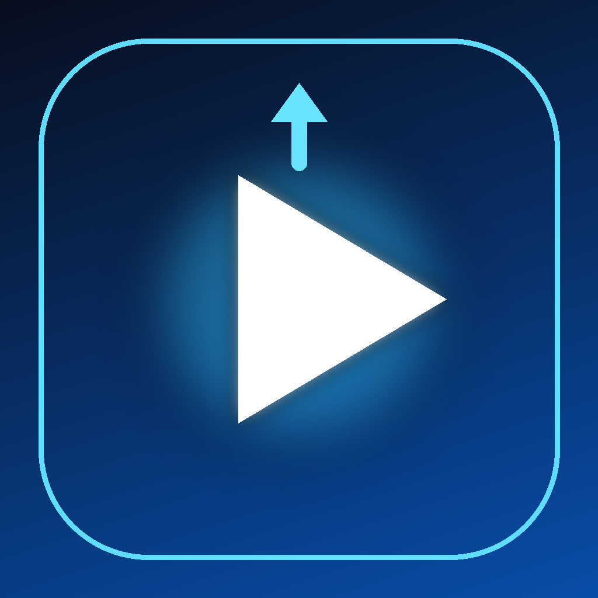

Shorts Bot Uploader
A local tool that sends your own short-form videos to TikTok as drafts.
What it does
Shorts Bot Uploader is a desktop workflow for the channel operator. It helps prepare vertical short videos and sends the selected file to the authorized TikTok account using TikTok's official Content Posting API.
- Connect only your own TikTok account with Login Kit.
- Upload a selected MP4 to TikTok as a draft.
- Review the draft, add the caption and publish inside the TikTok app.
- No automatic posting without the operator's action.
Data
The app runs locally. It stores the TikTok account identifier and OAuth tokens on the operator's device and sends the selected video only to TikTok. It does not sell data, run advertising, or use third-party analytics.